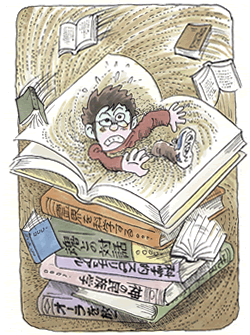

強迫性障害1
尽きぬ縁起恐怖、神罪恐怖の果てに
（縁起恐怖、神罪恐怖、他）
森野 直太郎（仮名）36歳・会社員
学生時代からの縁起恐怖症

私は子供の頃、病弱で布団の中で過ごすことが多く、家の天井を眺めては空想に耽ることが多かったように思います。そのせいか引っ込み思案となり、自分の方から人の輪の中に入るような子供ではありませんでした。そんな私の神経質症の始まりは、中学生の時でした。それまで頑張ってきた部活動を辞めたことがきっかけです。続けたい気持ちはあるのに毎日の練習の厳しさから逃れるため途中で投げ出したからです。辞めたその日は重圧から解放され清々しい気分でした。しかし、だんだんと日が経つにつれて苦しくなってきます。辞めたはずの部活動のことが気になり、いてもたってもいられなくなりました。何でもっと頑張らなかったのだろう、なぜあれだけ打ち込んできたのにと悔やむのです。何とかして気持ちを切り替えようと、夜中勉強を終えると近所の神社にまで走りに行き、境内に向って手を合わせます。自分が犯した過ちを懺悔するために祈るのです。しかし、後悔の念は一向に消えません。むしろ、罪意識が募るばかりでした。そんな状態が続き、将来を考えるどころか試験準備もろくにしないまま大学受験となりました。結果は全て不合格。追い込まれた私は、二次募集や試験日程の遅い大学を探し、ようやく合格。自宅近くの大学も受かりましたが散々親に迷惑をかけてきたので、親の前から消えてしまおうと思い、わざと自宅からは通えない遠方の大学を選びました。
私は学生寮に入ることになりました。独房のような狭くて粗雑な環境に私は愕然としました。これはきっと自分のこれまでの悪行が天罰となりこのような生活を自ら引き寄せたのだと思いました。この先も想像の及ばない災いが起るのではという恐怖心が襲ってきました。また同じ過ちをまた繰り返すのだろうとそんな事ばかり考えていました。自分がこのような事になったのは御先祖様をきちんと供養していなかったからだと考え、誰にも事情を言わず田舎まで供養しに行きましたが、何も変わりませんでした。
大学生になったある日のこと、学生図書館の司書の方からある本を読むよう勧められました。物理学の先生が書いたもので、面白くてあっという間に読み終えました。そして没頭するにつれて重力や電気といった目に見えない物が世の中にあることをあらためて知りました。それなら既に亡くなった先祖の存在や心の波動のようなものも在るに違いないと考えるようになりました。そして、目に見える世界だけが全てではないと考えると息苦しくなりました。そして自分の背後にも見えない存在があると思うと背筋に何かいつも不気味な気配があるような感じにとらわれるようになりました。そのうち毎日同じ道を歩く時でも嫌な感じがすると、わざわざ迂回するようになりました。ついには夜も眠れなくなり、見えない何者かの存在を追い払おうと祈るばかり。私は何とかしてこの奇妙な感覚を治したいと思い、自分に似た症状が精神医学書などにないか探し始めました。
偶然、本屋で出会った森田療法
たまたま近所の本屋で森田療法関係の書籍を見つけました。すぐにはピンときませんでしたが、少しでも解決のきっかけになればと思い手に取りました。そして関連する解説書や克服体験談などを読み、自分の考えと180度違っていることを知りました。そこには、そもそも神経質症というのは、「神経の衰弱から起こるものではなく、ある特殊の気質の人に起こるものである。これは病気ではない。」と書いてありました。続く文章には「だから、これを病気として治療してはけっして治らならい。ただこれを健康者として取りあつかえば容易に治る。」とあります。病気・異常だと思っていたのが、実はまったく違っていたのです。病人として治療しても根本的な解決にはならないことを知りました。さらに「つまり自己観察が強くて物事を気にするということから、そのことばかりに執着するために、だんだんにその不快感覚が憎悪するようになります。」と書いてあります。自分の事がそっくりそのまま書いてあり驚きました。
ホンネで語れる仲間たち
私は、生の森田療法の話しを聞きたいと思い、勉強している人が集まる会に参加しました。そこでは自分の想像に反し、皆さん明るく元気そうでした。講師の方からは「日常は、まがりなりにもできている。それでよろしいよ。」と言っていただき、「雑多な経験を積んでいくことが大事です」とアドバイスされました。その後、私は関西方面への赴任がきっかけとなり、メンタルヘルス岡本記念財団に行きました。森田療法関連の書籍が数千冊もあるというので一度訪問したかったのです。そして、紹介された勉強会に行ってみると沢山の人がおり、所狭しと膝寄せって座っていました。神経質症の話題は、身近な人にも話しにくいところがありますが、ここではそんな気兼ねをする必要はありません。今は苦しいけれどきっと良くなる日が来るから頑張ろう、といった雰囲気が満ち溢れていました。何よりもホンネで語れる仲間に出会えた事が良かったです。こうして私は森田療法を通じ、一時の悩みからは解放されるようになりました。しかし、私は、中々解決できない結婚問題を引きずっていました。
結婚、現在、そして将来へ
周囲から早く結婚しなさいと言われていましたが、「再び、神経質症を患って相手に迷惑をかけたらどうしよう」といった事にとらわれていました。そんな心境の中、先輩の紹介で今の家内と出会いました。しかし、私が自分勝手な都合を優先するので中々交際が進まず、取り持っていただいた先輩からは「ずるい男はだめだ。この件は降りる」といった事態になってしまいました。それから将来について真剣に考え、互いの事をぶつけ合い、再び結婚に向って進み始めました。神経質症を振り返る余裕などはありませんでした。そして今では自分が二児の父親となり忙しい毎日を過ごしています。
最後になりますが、初め森田療法は症状を克服するだけのものとしか思っておりませんでした。しかし、勉強していくと森田療法はそのようなレベルのものではないことを知りました。森田全集5巻には、次のような序文があり感動しました。「神経質が、自ら劣等感に駆られ、或いは種々の強迫観念に苦しみて、我と我身をかこつのは、単に劣等のために卑屈となり、煩悶のために、自暴自棄となるのではない。この一生をただで終わりたくない・偉くなりたい・真人間になりたい・との憧れに対する・やるせない苦悩である。」
今後も森田療法は自分の生活には欠かせないものになりそうです。生前、森田先生が書き残された森田正馬全集を教材にして、これからも仲間と一緒に勉強を続けていきたいと思います。